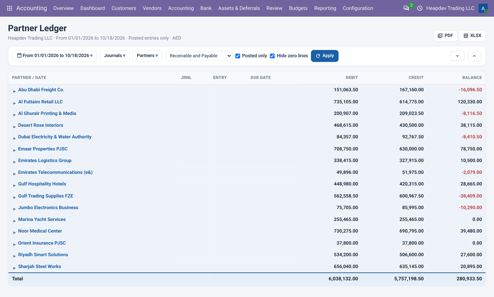
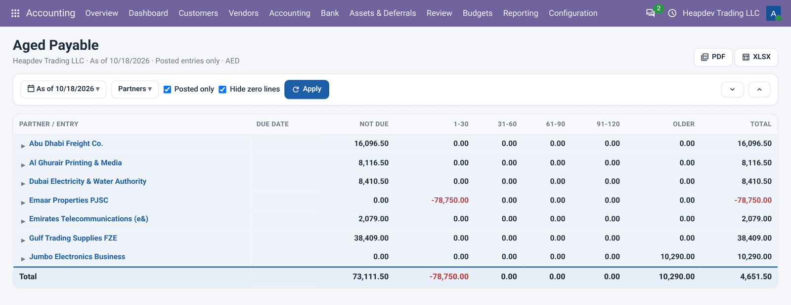
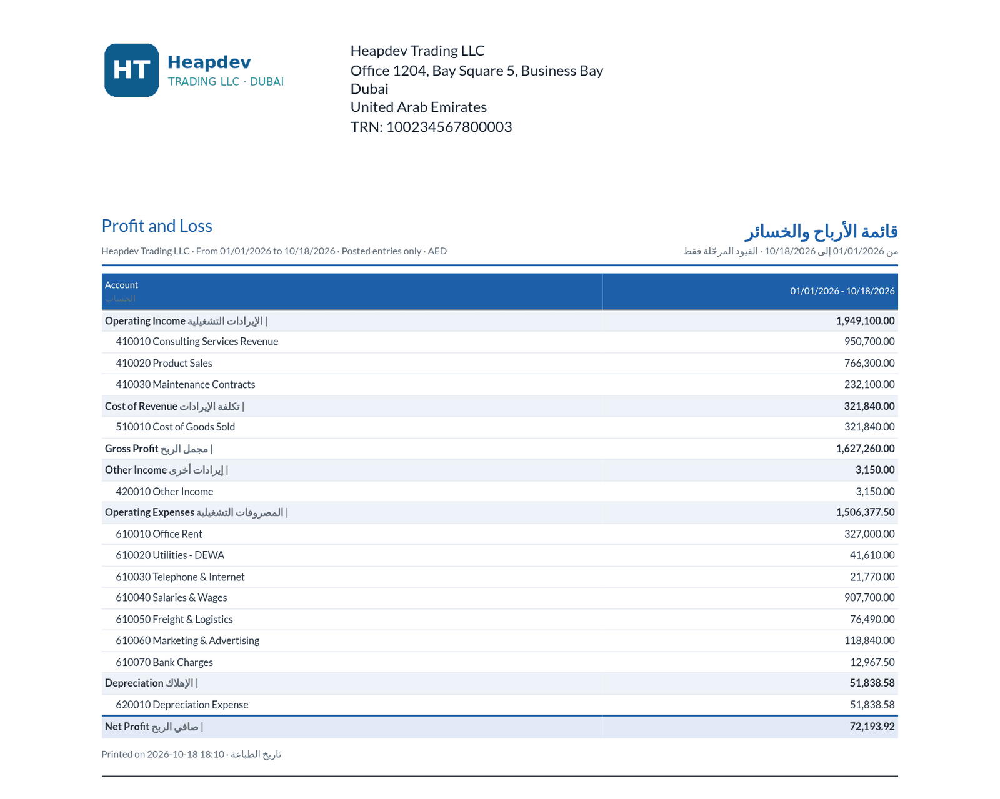

P&L · BALANCE SHEET · LEDGERS · AGING · VAT
Accounting Financial Reports
Interactive P&L, Balance Sheet, ledgers, aging and VAT with drill-down and PDF / Excel export.
التقارير المالية
الأرباح والخسائر والميزانية ودفاتر الأستاذ والأعمار والضريبة مع التفاصيل والتصدير إلى PDF وإكسل.
10+ reports
P&L, Balance Sheet, Cash Flow, General Ledger, Trial Balance, Partner Ledger, Journal Audit, Aged Receivable / Payable and VAT.
Interactive
Filters, comparison periods, fold / unfold, search and drill-down to the journal items behind every amount.
Ready to share
Clean English | Arabic PDF and formatted Excel export with one click.
What it does
ماذا يفعل التطبيق
Accounting Financial Reports brings the reports accountants expect from Odoo Enterprise to Odoo Community, free. Open any report from Accounting > Reporting, choose a date range or a preset, compare with previous periods, restrict to journals, analytic accounts or partners, include draft entries if needed and click any amount to see the journal items behind it. Every report prints as a bilingual English | Arabic PDF and exports to Excel. The VAT report is designed for UAE and KSA VAT returns.
يجلب تطبيق التقارير المالية التقارير التي يتوقعها المحاسبون من أودو إنتربرايز إلى نسخة المجتمع مجاناً. افتح أي تقرير من المحاسبة > التقارير، واختر نطاق تاريخ أو فترة جاهزة، وقارن مع الفترات السابقة، وقيّد حسب اليوميات أو الحسابات التحليلية أو الشركاء، وأدرج القيود المسودة عند الحاجة، وانقر على أي مبلغ لرؤية بنود اليومية المرتبطة. يُطبع كل تقرير كملف PDF ثنائي اللغة ويُصدّر إلى إكسل. تقرير الضريبة مصمم لإقرارات ضريبة القيمة المضافة في الإمارات والسعودية.
Highlights
أبرز الميزات
| ✓Profit and Loss | الأرباح والخسائر |
| ✓Balance Sheet | الميزانية العمومية |
| ✓Cash Flow Statement | قائمة التدفقات النقدية |
| ✓General Ledger | دفتر الأستاذ العام |
| ✓Trial Balance | ميزان المراجعة |
| ✓Partner Ledger | دفتر أستاذ الشركاء |
| ✓Journal Audit | تدقيق اليوميات |
| ✓Aged Receivable and Payable | أعمار المدينين والدائنين |
| ✓VAT / Tax Report (UAE and KSA friendly) | تقرير ضريبة القيمة المضافة (الإمارات والسعودية) |
| ✓Filters, comparison and drill-down | المرشحات والمقارنة والانتقال للتفاصيل |
| ✓Bilingual PDF and Excel export | تصدير PDF ثنائي اللغة وإكسل |
How to use
طريقة الاستخدام
1STEP 1 · INSTALL
Install the module; a Reporting menu with Financial, Partner and Audit reports appears under Accounting.
ثبّت التطبيق؛ تظهر قائمة التقارير المالية وتقارير الشركاء والتدقيق تحت المحاسبة.
2STEP 2 · FILTER
Pick dates or a preset, comparison, journals, analytic accounts, partners and posted / all entries, then Apply.
اختر التواريخ أو فترة جاهزة والمقارنة واليوميات والحسابات التحليلية والشركاء ثم طبّق.
3STEP 3 · DRILL & EXPORT
Click amounts to open journal items, unfold lines, then print the PDF or export to XLSX.
انقر على المبالغ لفتح بنود اليومية ثم اطبع PDF أو صدّر إلى XLSX.
📷 Want to see it? Open the Screenshots tab above for 13 real screenshots.
افتح تبويب لقطات الشاشة في الأعلى لمشاهدة 13 لقطة حقيقية.
Features in detail
الميزات بالتفصيل
Profit and Loss
Income, cost of revenue, gross profit, operating expenses, other income and net profit, grouped by account type with foldable sections and up to three comparison periods (previous period or same period last year).
الأرباح والخسائر
الإيرادات وتكلفة الإيرادات ومجمل الربح والمصروفات التشغيلية والإيرادات الأخرى وصافي الربح، مجمعة حسب نوع الحساب مع أقسام قابلة للطي وحتى ثلاث فترات مقارنة.
Balance Sheet
Current and non-current assets, receivables, bank and cash, prepayments, liabilities, equity, current year earnings and retained earnings as of any date, with a built-in balance check.
الميزانية العمومية
الأصول المتداولة وغير المتداولة والمدينون والبنك والنقد والمدفوعات المقدمة والخصوم وحقوق الملكية وأرباح السنة والأرباح المحتجزة في أي تاريخ، مع فحص توازن مدمج.
Cash Flow Statement
Direct-method cash flow: cash received from customers, cash paid to suppliers and employees, investing and financing activities, opening and closing cash.
قائمة التدفقات النقدية
تدفقات نقدية بالطريقة المباشرة: المقبوضات من العملاء والمدفوعات للموردين والموظفين والأنشطة الاستثمارية والتمويلية والنقد الافتتاحي والختامي.
General Ledger
Every account with initial balance, each journal item (date, entry, partner, label, debit, credit, running balance) and ending balance. Fold or unfold all, filter by journals, analytic accounts and partners.
دفتر الأستاذ العام
كل حساب مع الرصيد الافتتاحي وكل بند يومية (التاريخ والقيد والشريك والبيان والمدين والدائن والرصيد الجاري) والرصيد الختامي، مع الطي والتوسيع والتصفية حسب اليوميات والحسابات التحليلية والشركاء.
Trial Balance
Initial balance, period debit and credit and ending balance for each account, with totals that always balance.
ميزان المراجعة
الرصيد الافتتاحي ومدين ودائن الفترة والرصيد الختامي لكل حساب مع إجماليات متوازنة دائماً.
Partner Ledger
Receivable, payable or both, per customer and vendor with initial balance, every transaction and running balance.
دفتر أستاذ الشركاء
المدينون أو الدائنون أو كلاهما لكل عميل ومورد مع الرصيد الافتتاحي وكل معاملة والرصيد الجاري.
Journal Audit
All entries of the period grouped by journal, showing each journal entry with its lines and totals, ideal for auditors.
تدقيق اليوميات
كل قيود الفترة مجمعة حسب دفتر اليومية مع أسطر كل قيد وإجمالياته، مثالي للمدققين.
Aged Receivable and Payable
Open balances per partner in Not due, 1-30, 31-60, 61-90, 91-120 and Older buckets as of any date, with drill-down to the open invoices.
أعمار المدينين والدائنين
الأرصدة المفتوحة لكل شريك في فئات غير مستحق و1-30 و31-60 و61-90 و91-120 وأقدم في أي تاريخ، مع الانتقال إلى الفواتير المفتوحة.
VAT / Tax Report (UAE and KSA friendly)
VAT return summary: standard rated, zero-rated and exempt supplies, output VAT, input VAT recoverable and net VAT payable, plus a per-tax base and amount table.
تقرير ضريبة القيمة المضافة (الإمارات والسعودية)
ملخص إقرار ضريبة القيمة المضافة: التوريدات الخاضعة للنسبة الأساسية والصفرية والمعفاة، وضريبة المخرجات والمدخلات وصافي الضريبة المستحقة، مع جدول الأساس والمبلغ لكل ضريبة.
Filters, comparison and drill-down
Date ranges and presets (this/last month, quarter, financial year), as-of date, journals, analytic accounts, partners, posted only or all entries, hide zero lines and comparison periods. Every amount opens the underlying journal items.
المرشحات والمقارنة والانتقال للتفاصيل
نطاقات التاريخ والفترات الجاهزة (الشهر والربع والسنة المالية) وتاريخ كما في واليوميات والحسابات التحليلية والشركاء والقيود المرحّلة فقط أو الكل وإخفاء الأسطر الصفرية وفترات المقارنة. كل مبلغ يفتح بنود اليومية المرتبطة.
Bilingual PDF and Excel export
Print any report as a clean English | Arabic PDF with the company header, or export it to a formatted XLSX file with all lines unfolded.
تصدير PDF ثنائي اللغة وإكسل
اطبع أي تقرير كملف PDF ثنائي اللغة (إنجليزي | عربي) بترويسة الشركة، أو صدّره إلى ملف XLSX منسق مع كل الأسطر.
Screenshots
لقطات الشاشة
Real screenshots from a demo company with the UAE chart of accounts.
لقطات حقيقية من شركة تجريبية بدليل حسابات الإمارات.
1Profit and Loss with a comparison period, foldable sections and filters
الأرباح والخسائر مع فترة مقارنة وأقسام قابلة للطي ومرشحات

2Balance Sheet as of today with the balance check
الميزانية العمومية حتى اليوم مع فحص التوازن

3Cash Flow Statement (direct method)
قائمة التدفقات النقدية (الطريقة المباشرة)

4General Ledger with initial balance, journal items and running balance
دفتر الأستاذ العام مع الرصيد الافتتاحي وبنود اليومية والرصيد الجاري

5Trial Balance: initial, period debit / credit and ending balance
ميزان المراجعة: الافتتاحي ومدين ودائن الفترة والختامي

6Partner Ledger for customers and vendors
دفتر أستاذ الشركاء للعملاء والموردين

7Journal Audit grouped by journal and entry
تدقيق اليوميات مجمعاً حسب اليومية والقيد

8Aged Receivable by partner and aging bucket
أعمار المدينين حسب الشريك وفئة العمر

9Aged Payable by vendor
أعمار الدائنين حسب المورد

10VAT return summary for UAE / KSA with output, input and net VAT
ملخص إقرار ضريبة القيمة المضافة للإمارات والسعودية

11Drill-down: every amount opens the underlying journal items
الانتقال للتفاصيل: كل مبلغ يفتح بنود اليومية المرتبطة

12Bilingual English | Arabic PDF layout
تخطيط PDF ثنائي اللغة إنجليزي | عربي

13Arabic interface: Profit and Loss
الواجهة العربية: الأرباح والخسائر

Frequently asked questions
الأسئلة الشائعة
Is it really free?
Yes. This app is free and licensed LGPL-3.
هل هو مجاني فعلاً؟
نعم، هذا التطبيق مجاني ومرخص LGPL-3.
Does it replace Odoo Enterprise accounting?
It covers the most used Enterprise accounting reports and tools for Community users. It does not include bank synchronisation, OCR or consolidation.
هل يغني عن محاسبة إنتربرايز؟
يغطي أكثر تقارير وأدوات محاسبة إنتربرايز استخداماً لمستخدمي المجتمع، ولا يشمل مزامنة البنوك أو التعرف الضوئي أو التوحيد.
Does it change my existing entries?
No. Reports read the posted journal items; assets, PDC and recurring entries create normal journal entries you can review.
هل يغير قيودي الحالية؟
لا. التقارير تقرأ بنود اليومية المرحّلة، والأصول والشيكات والقيود المتكررة تنشئ قيوداً عادية يمكن مراجعتها.
Which languages are included?
English and a complete Arabic translation; PDFs are printed in English and Arabic side by side.
ما اللغات المضمنة؟
الإنجليزية وترجمة عربية كاملة، وتُطبع ملفات PDF بالإنجليزية والعربية جنباً إلى جنب.
Is it multi-company?
Yes, every report and record follows the current company.
هل يدعم الشركات المتعددة؟
نعم، كل تقرير وسجل يتبع الشركة الحالية.
Requirements
المتطلبات
Depends only on account and mail. Works on Community and Enterprise databases; no extra Python packages.
يعتمد فقط على تطبيقي المحاسبة والمراسلات. يعمل على قواعد بيانات المجتمع وإنتربرايز دون حزم بايثون إضافية.
Support | الدعم
Free app by Adil Akbar. For questions, customisation or implementation support contact adilak389@gmail.com.
تطبيق مجاني من عادل أكبر. للاستفسارات أو التخصيص أو دعم التنفيذ تواصل عبر البريد adilak389@gmail.com.